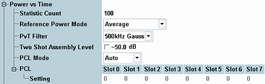

The following parameters configure the power vs. time settings of the GSM multi-evaluation measurement. They are contained in section "Measurement Control".

Defines the number of measurement intervals per measurement cycle (statistics cycle, single-shot measurement). This value is also relevant for continuous measurements, because the averaging procedures depend on the statistic count.
The measurement interval for all TX measurements is completed when the R&S CMW has measured the full slot sequence (no. of slots). The measurement provides independent statistic counts for the power, modulation and spectrum results. In single-shot mode and with shorter spectrum statistic counts, the spectrum evaluation is stopped while the R&S CMW still continues providing new power and modulation results.
Remote command:Determines how the reference power and the (average) burst power is calculated for 8PSK and 16-QAM-modulated bursts where the amplitude of the modulated carrier varies with the transmitted data. The reference power is the 0-dB line in the power vs. time measurement diagram. The setting is not valid for slots containing GMSK-modulated bursts.
See also: "Statistical Results"
- Current: The current power is calculated for each measured 8PSK or 16-QAM-modulated burst, based on the actual, data-dependent power in the useful part of the burst. Reference powers for the "average", "minimum" and "maximum" curves are calculated from the "current" results according to the general statistical rules.
Use this mode for fast measurements on bursts containing random data. - Average: The reference power is equal to the average power of the average measurement curve, irrespective of the selected statistical curve. Regular transmitted bit patterns (e.g. an all zero sequence) result in a systematic deviation between the average and the data compensated powers.
Use this mode for measurements on bursts containing random data. - Data compensated: The current power is calculated as the long-term average for random data; see below. Reference powers for the average, minimum and maximum curves are calculated from the current results according to the general statistical rules. The reference power and (average) burst power no longer depends on the transmitted data.
Data compensated mode can slow down the measurement. Use this mode for accurate power measurements, especially if a non-random bit pattern is transmitted.
Data compensation
The amplitude of an 8PSK or 16-QAM-modulated RF signal varies with the transmitted data. The transmitter output power of a mobile phone is defined as the long-term average of the power for random data. This long time average (rather than the average power of the current burst) also represents the correct reference power (0-dB line) for the power vs. time measurement. The measurement is supported for 8PSK or 16-QAM-modulated bursts.
In the data compensated mode, each burst is demodulated to estimate a correction for the measured average power. As a consequence, all busts are displayed with their correct power, irrespective of the transmitted data.
Example 1 – regular burst pattern: A regular burst sequence consisting of all zeros is transmitted. The "current" and "average" power results are approximately equal; the correct "Data Compensated" result is manifestly different. At constant MS power, the power variations from one measurement interval to the next are small, irrespective of the reference power mode.
Example 2 – pseudo-random burst patterns: A pseudo-random burst sequence is transmitted. The power in "current" mode varies from one measurement interval to the next around the long-term average. The power in "average" mode tends towards the long-term average; it becomes more and more stable as more bursts are averaged. Again, the "data compensated" mode provides stable and correct results from the first measurement interval.
Remote command:IF filter to be used for measuring the power vs time results. All filter settings are in accordance with the conformance specification 3GPP TS 51.010-1.
- "500 kHz Gauss": Filter of Gaussian shape with a 3-dB bandwidth of 500 kHz, recommended for GMSK-modulated signals
- "1 MHz Gauss": Filter of Gaussian shape with a 3-dB bandwidth of 1 MHz (faster than the default filter but less frequency-selective)
Enables or disables the two-shot measurement mode for high dynamic range and defines an assembly level for the two consecutive measurement results.
In the two-shot measurement, the multislot range is measured in two frames using two different "Expected Nominal Power" settings. The results of the two stages are combined and displayed together in the power vs. time diagram.
The two maximum levels differ by 30 dB. It means that, depending on the level range of the MS and the external test setup, a gain in dynamic range up to 30 dB can be achieved. The two stage measurement ensures a sufficient dynamic range for arbitrary slot powers but increases the measurement time by a factor of 2.
The assembly level is the signal level relative to the reference level, where the two results obtained in a two stage measurement are joined: All trace points above the assembly level are obtained with a large expected nominal power, the ones below are measured with lower expected nominal power.
The assembly level is ignored as long as the two-shot mode is disabled. For combined signal path measurements, it is always disabled.
Remote command:- Auto: The R&S CMW estimates the PCL in each timeslot according to the measured average burst power. The dynamic limit lines are calculated according to the estimated PCL values. The "PCL > Setting" values are ignored; no PCL setting is required.
- PCL: The R&S CMW expects an input signal in accordance with the "PCL > Setting" values. The specified values are also used for the dynamic limit lines. Incorrect settings can cause wrong limit check results.
Sets the expected PCL values in all timeslots, to be used in "PCL Mode: PCL". See "PCL Mode". The list mode provides segment-specific PCL settings.
Note that the PCL values are interpreted according to the current GSM band setting; see Table "GSM power control levels".
In the standalone (SA) scenario, this parameter is controlled by the measurement. In the combined signal path (CSP) scenario, it is controlled by the signaling application.